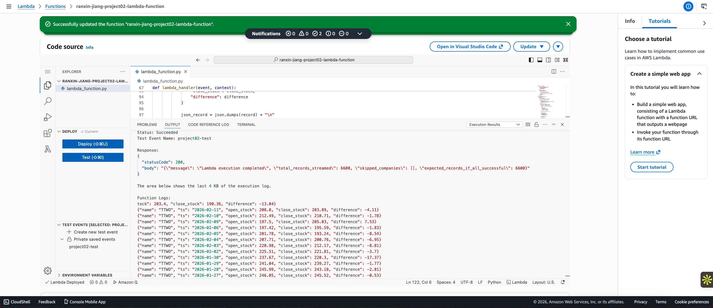
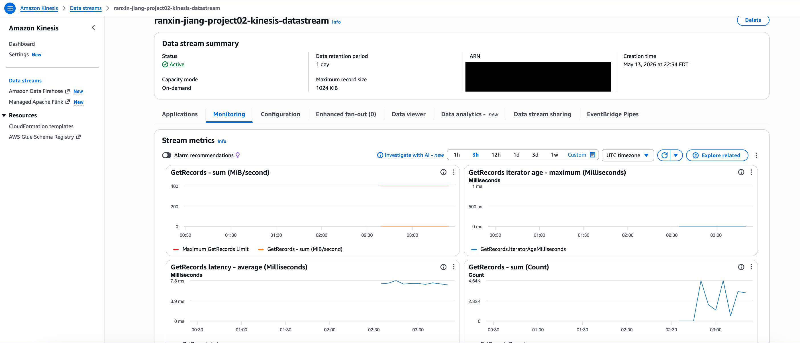
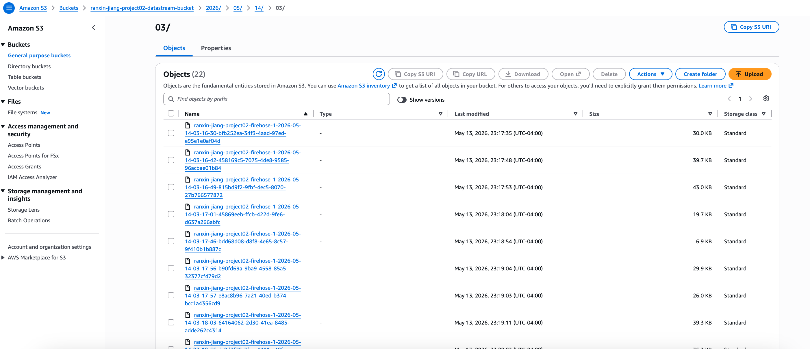
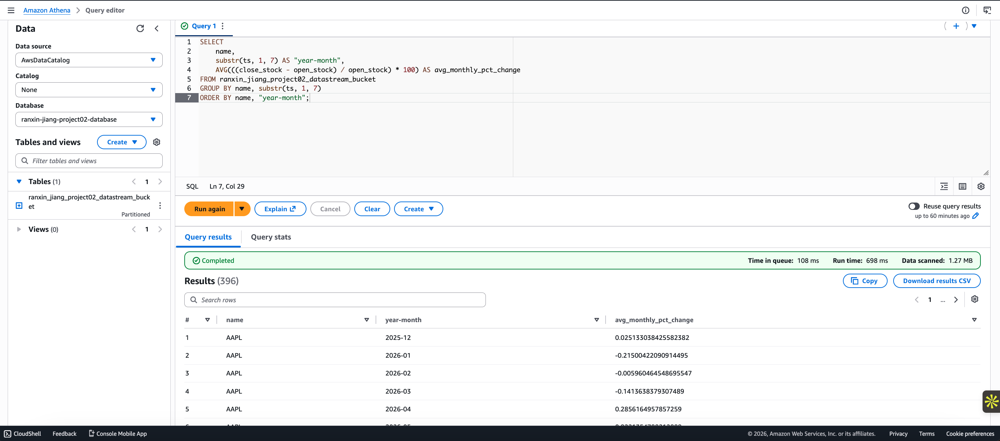
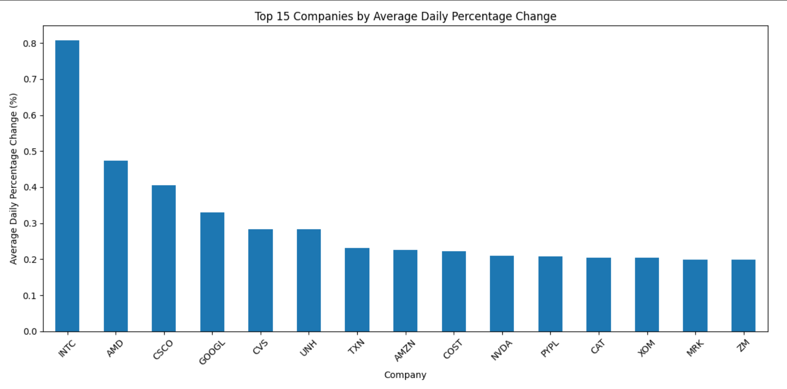
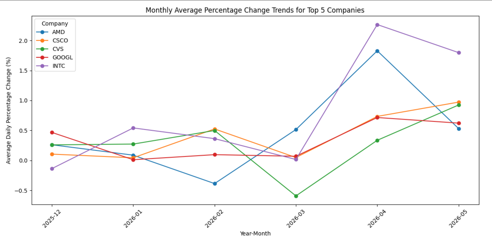

Cloud & Data Engineering
The Lambda producer, Athena query, and analysis notebook are on GitHub.
Stock market data is generated continuously, but the usual way to analyze it is to download a file and work on it locally. That works once and then goes stale, and it stops working entirely once the data outgrows your laptop.
Build a pipeline that takes in records as they arrive, stores them in the cloud, and makes them queryable with SQL — no nightly batch job, no database server to maintain.
A Lambda function pulls daily prices for 66 companies from the Alpha Vantage API and streams each record into Kinesis. Firehose delivers them into S3. Glue catalogs the schema so the raw files behave like a table. Athena queries them in place, and the analysis runs on that output.
The 66 tickers span technology, finance, retail, healthcare, energy, and industrials, so the dataset covers a range of sectors rather than a single slice of the market.
Seven services, each doing one job. Data moves left to right and never needs a human in the middle until the analysis step.
Each stage had a problem worth solving. The interesting parts weren't wiring the services together — they were the rate limits, the partitioning, and the schema.
A Lambda function loops through the 66 tickers, requests the daily time series for each, and reshapes every day into a flat record: company name, timestamp, open price, close price, and the difference between them.
Alpha Vantage rate-limits aggressively on the free tier, so a naive loop fails partway through and leaves gaps. The function retries up to five times per company with a 15-second pause between attempts, and tracks which companies were skipped rather than failing silently. The final run returned an empty skip list — all 66 companies made it.
Records are written to Kinesis one at a time with put_record, partitioned by ticker so each company's records stay ordered, with a 50-millisecond pause between calls to stay inside the stream's throughput.

The Kinesis stream runs in on-demand capacity mode, so throughput scales with the load instead of requiring shards to be provisioned up front. Retention is set to one day — long enough to replay if delivery fails, short enough not to pay for storage the pipeline doesn't need.
Watching the metrics during a run is how you confirm the stream is actually keeping up: iterator age staying near zero means the consumer isn't falling behind the producer.

Firehose buffers incoming records and writes them out to S3 in batches, organized into a folder structure by year, month, day, and hour.
That partitioning is what keeps querying cheap later. Athena bills on data scanned, so a query that can narrow to a few prefixes reads far less than one forced to scan the whole bucket — the difference between megabytes and gigabytes as the dataset grows.

A Glue crawler infers the schema from the JSON landing in S3 and registers it in the Data Catalog, which is what makes the raw files addressable as a table. From there Athena queries them directly — no load step, no warehouse to maintain.
The analysis query computes average monthly percentage change per company, grouping by ticker and the year-month slice of the timestamp. It returned 396 rows in 698 milliseconds while scanning 1.27 MB — a useful demonstration of why the partitioning mattered.

The Athena results exported to CSV and fed a short analysis in Pandas and Matplotlib. Two questions, two charts.
Ranking all 66 companies by average daily percentage change — the move from open to close — put INTC, AMD, and CSCO at the top, with technology names appearing repeatedly in the top 15. Only the top 15 are charted; plotting all 66 made the comparison unreadable.
Worth being precise about what this measures. Averaging a signed daily change lets gains and losses cancel, so this is mean daily drift, not volatility — a company that swings wildly in both directions would land near zero here. The honest reading is that these names trended upward most consistently across the period, not that they moved around most. Measuring volatility would mean swapping the average for a standard deviation or an absolute change, which is the first thing I'd run next.

No. Tracking the top 5 companies month by month showed the ranking isn't fixed — INTC and AMD varied noticeably between months while others held closer to flat.
That matters for how the first chart should be read: a single average across the whole period flattens the months that produced it. A company can top the ranking on the strength of two good months and look unremarkable the rest of the time.

The pipeline works end to end. Building it surfaced four things worth carrying into the next one.
requests library at runtime inside the Lambda works but is slow and fragile. A Lambda layer or a packaged deployment would be the right approach.